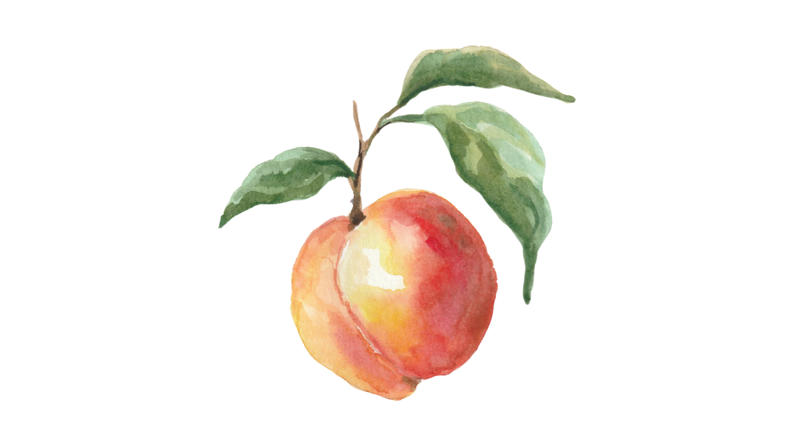
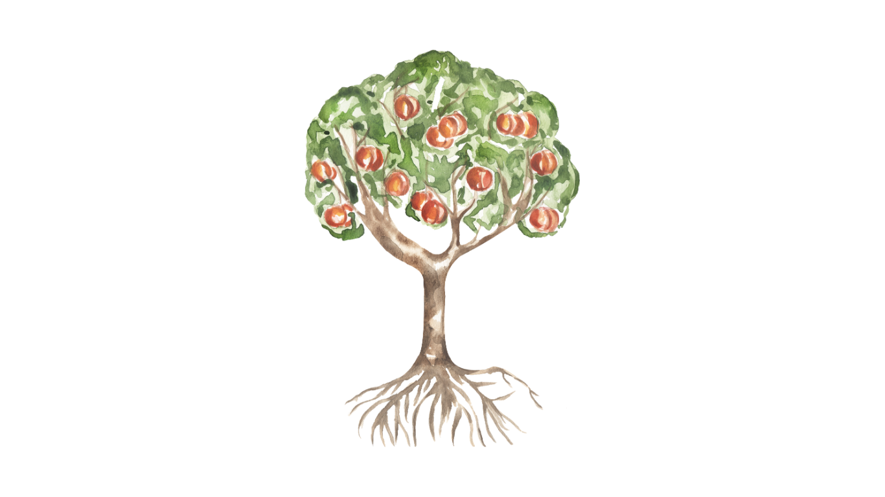

The most beautiful things are the most fragile
An Original Series by Brandon Camp
A peach is one day from perfect
and two days from gone.
Set in the heart of Georgia, PEACHES is the story of a man who came home to bury his past and instead discovers it's the only thing worth saving.
A heartwarming, deliciously comedic series about fresh starts and family secrets. Told with the warmth of a Southern kitchen ~
sweet and savory, and cast-iron hot.
An orchard unlike any you've seen before. Pits and all.
The Series
One year ago, Jesse Calloway gave up Nashville and a promising music career to come home to Georgia after his sister's sudden death. Now he's raising her twelve-year-old daughter, Birdie, barely holding together his family's once-beloved peach orchard...and counting down the days until he can sell the whole thing and never look back.
Until a woman walks into a bar.
And everything changes.
The World

Georgia's peach industry generates hundreds of millions annually and the Calloways were once at the center of it. The orchard is still beautiful but the books are less so. They're one bad season from losing everything — and a buyer has come knocking at exactly the right time.
Or, the wrong time. And the wrong buyer.
An hour outside of Atlanta. A small community built around the Calloway name. A diner that serves peach cobbler. A church where all the kids were baptized. And a bar where a musician and a lawyer will meet one night without knowing they're about to end up on opposite sides of everything.
A buyer has arrived with a generous offer, a warm handshake, and a story about saving family farms. But behind the smoke and mirrors is a firm out of Atlanta with an agenda. They're not preserving farms. They're acquiring land, water rights, and far more. They don't care about the Calloway peaches. They care about what's underneath.
PEACHES is a love story ~ or two, all tangled up in one. Jesse and Nora have chemistry that starts with a lie and has got nowhere to go but south. He's falling for a woman whose last name is on the paperwork that could take everything away; and she's having a real bad day for a whole year.
Meanwhile, Casey Greer, the girl Jesse left without a goodbye, is right next door with ten years of unresolved feelings and a mighty short fuse. For the record, peaches when thrown, hurt.
PEACHES finds its humor in the sweet, mushy bits of life. A man who can write a song that makes you cry but can't keep a snarky twelve-year-old from outsmarting him before breakfast. A corporate lawyer in $400 heels learning what a rootstock is. An eighty-year-old patriarch who answers every question about the future with a story about Nixon. A town where every barstool and barbecue knows your damn business.
The Tone
PEACHES lives in the space between a laugh and a lump in your throat.
Where the funniest scene in the episode is followed by the one that makes you cry.
Sweet and tart. Ripe and raw.
COMPS
Ginny & Georgia × Schitt's Creek × Virgin River × Friday Night Lights
Jesse Calloway doesn't want to save the family orchard. He wants to sign the papers, take the money, and disappear back into a life that doesn't remind him of everyone he's lost. But when a one-night encounter with a sharp-tongued lawyer turns into the discovery that the buyer circling his family's land isn't what they seem, he's pulled into a fight he never asked for.
With only his twelve-year-old niece (who may be smarter than all of them), an eighty-year-old grandfather guarding a dangerous secret, and a woman from the wrong side of the deal who's risking everything to help him, Jesse has to learn how to farm, how to parent, and how to stay, the one thing he's never been able to do.
Each episode deepens a mystery amidst relentless pressure ~ weather that won't cooperate, a harvest window that waits for no one, and a crew that's being quietly poached. Neighboring farmers are selling out, a love triangle simmers, and beneath it all, two secrets ~ one buried in the land, one in the past ~ threaten to surface and change everything the Calloways thought they knew about their family, their orchard, and the sister whose death brought them all back together.
PEACHES is a show about small farms and big lies. About a town worth fighting for and a family learning, one bruising season at a time, that the things most worth keeping are the ones you have to tend every single day.